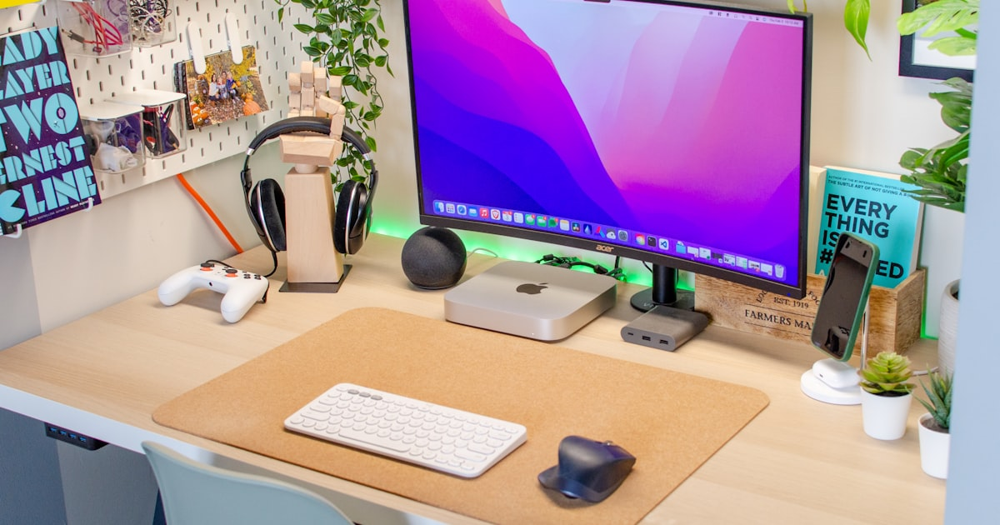

Remote-Work-Setup unter 100 Euro

Foto: Unsplash
Man liest oft von 2.000-Euro-Home-Office-Setups mit Stehschreibtisch und Curved-Monitor. Realistisch ist das für die wenigsten. Hier eine Basis-Ausstattung, die tatsächlich einen Unterschied macht – für unter 100 Euro insgesamt.
Die Basis-Ausstattung im Überblick
| Produkt | Warum | Ca.-Preis |
|---|---|---|
| Ergonomische Maus | Beugt Handgelenk-Schmerzen bei langen Arbeitstagen vor | ca. 15–25 € |
| Handballenauflage | Entlastet das Handgelenk bei der Tastatur | ca. 8–12 € |
| Laptop-Ständer (klappbar) | Bringt den Bildschirm auf Augenhöhe | ca. 20–30 € |
| Externe Tastatur (kompakt) | Ermöglicht bessere Sitzhaltung mit erhöhtem Laptop | ca. 20–25 € |
* Affiliate-Link
Warum genau diese Reihenfolge?
Wenn du nur eine Sache zuerst kaufen kannst: die Kombination aus Laptop-Ständer und externer Tastatur bringt ergonomisch am meisten, weil sie die Ursache vieler Nacken- und Rückenprobleme direkt angeht – den nach unten geneigten Blick auf einen tief sitzenden Laptop-Bildschirm. Ein Laptop allein zwingt dich entweder zu einem gesenkten Kopf (Bildschirm zu niedrig) oder zu angehobenen Schultern (Tastatur zu hoch). Sobald der Bildschirm auf Augenhöhe steht und die Tastatur separat auf Tischhöhe liegt, fällt dieser Kompromiss weg.
Worauf du bei jedem Teil achten solltest
Bei der ergonomischen Maus zählt vor allem die Handhaltung: vertikale oder leicht geneigte Modelle halten das Handgelenk in einer neutraleren Position als eine flache Standardmaus. Größe und Gewicht sollten zur eigenen Hand passen – zu groß oder zu klein untergräbt den Effekt. Bei der Handballenauflage lohnt sich ein fester, nicht zu weicher Schaumstoff, der bei Druck nicht komplett nachgibt; reine Deko-Polster bringen wenig. Ein Laptop-Ständer sollte kippsicher stehen und mehrere Rastpositionen bieten, damit du ihn an unterschiedliche Tischhöhen anpassen kannst – Aluminium- oder Metallmodelle sind meist stabiler als reine Kunststoffkonstruktionen. Bei der externen Tastatur reicht ein kompaktes Modell ohne Nummernblock, wenn Platz eine Rolle spielt; wichtiger als die Bauform ist ein angenehmer Tastenhub, den du am besten vorher kurz ausprobierst oder anhand von Rezensionen einschätzt.
Checkliste vor dem Kauf
- Reihenfolge: Laptop-Ständer und externe Tastatur zuerst, sie beheben das größte Problem
- Maus: Handhaltung und Größe wichtiger als Zusatzfunktionen
- Handballenauflage: fester Schaumstoff statt reinem Deko-Polster
- Ständer: mehrere Höhenstufen und kippsicherer Stand
- Kabel oder Bluetooth: je nach Anzahl vorhandener Anschlüsse am Laptop abwägen
- Rückgaberecht nutzen: passt die Handhaltung nicht, lieber austauschen als durchhalten
Was du dir (erstmal) sparen kannst
Ein externer Monitor, ein Stehschreibtisch oder ein High-End-Bürostuhl sind langfristig sinnvoll, aber nicht der erste Schritt. Die oben genannten vier Teile lösen die größten Probleme zuerst – alles Weitere kannst du nachrüsten, sobald du siehst, dass Remote-Work für dich bleibt.
Häufige Fragen
Reicht ein Budget-Setup für dauerhaftes Home-Office?
Als Basis ja. Die vier Teile in diesem Artikel beheben die größten ergonomischen Schwachstellen eines Laptop-Arbeitsplatzes. Bei dauerhafter Vollzeit-Nutzung lohnt es sich mittelfristig, zusätzlich in einen externen Monitor und einen besseren Stuhl zu investieren.
Was bringt eine Handballenauflage wirklich?
Sie hält das Handgelenk beim Tippen und bei der Mausnutzung in einer neutraleren Position, statt es über die Tischkante abzuknicken. Das ist besonders bei langen Arbeitstagen am Bildschirm ein einfacher, günstiger Hebel gegen Verspannungen.
Lohnt sich ein Laptop-Ständer, wenn ich sowieso oft unterwegs arbeite?
Ja, gerade dann. Klappbare Modelle wiegen meist nur wenige hundert Gramm und passen in jede Tasche. Wichtiger als das Gewicht ist, dass der Ständer stabil steht und sich in der Höhe an unterschiedliche Tische anpassen lässt.
Fazit
Ein funktionales Setup ist eine Frage der richtigen Priorisierung, nicht des Budgets. Mit diesen vier Teilen deckst du die größten ergonomischen Baustellen ab, ohne dein Konto zu belasten.